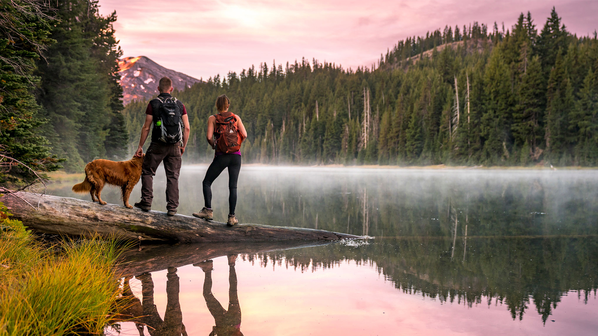
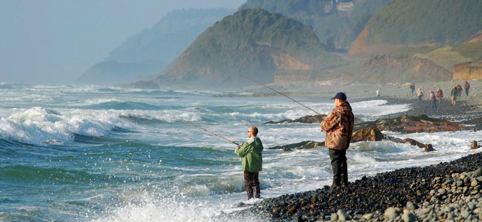
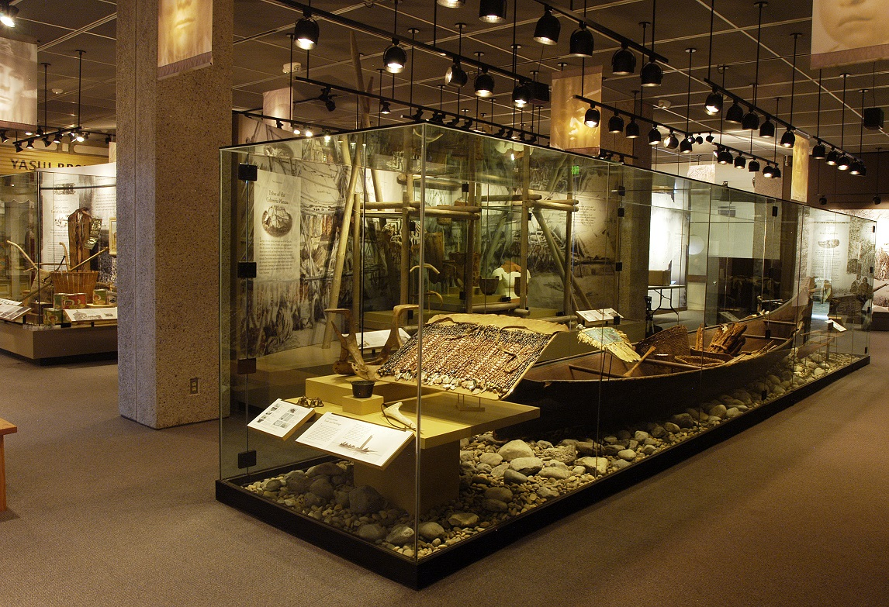
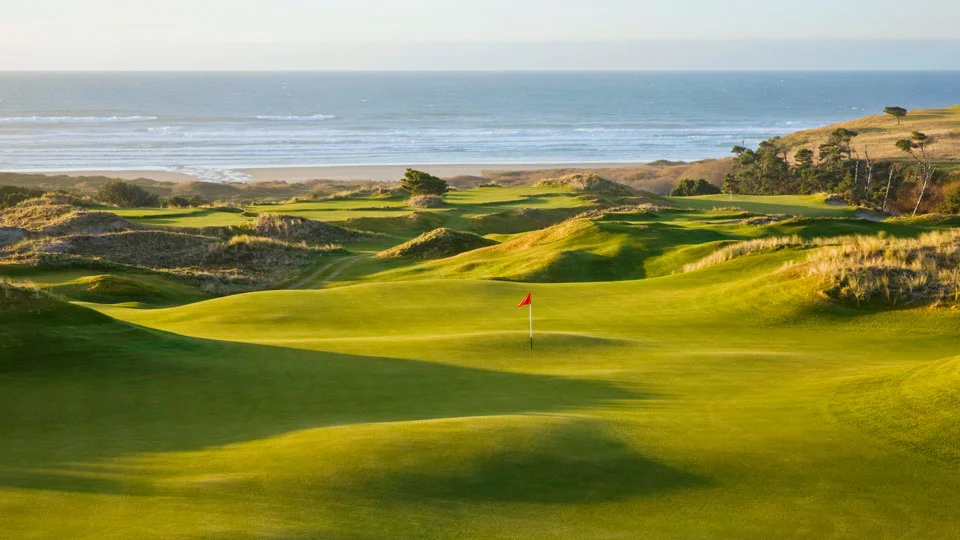
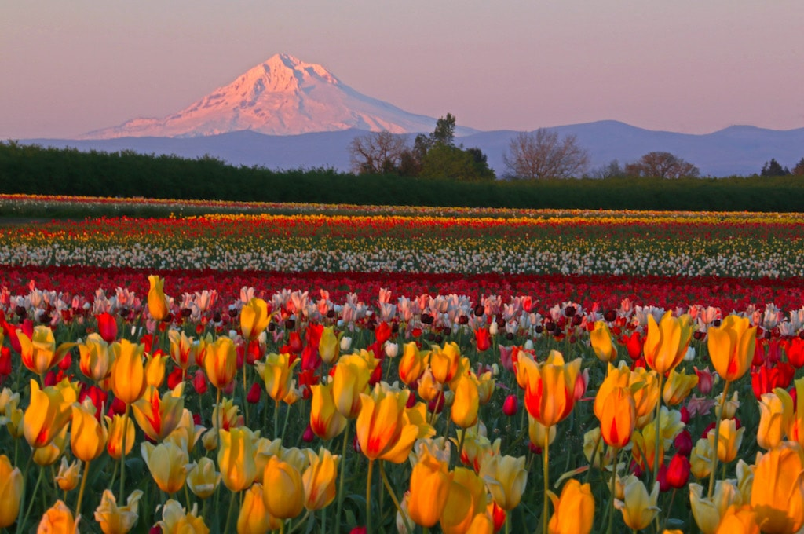
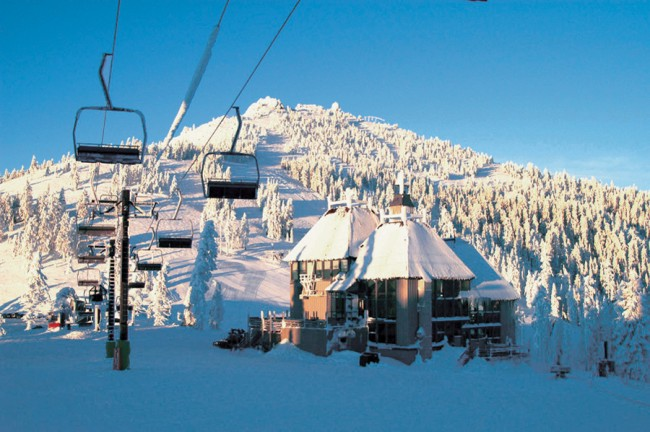

Things to do!
Oregon is full of cities, forest, water and is a hot spot for all types of recreational activities! No matter if you're into art, history, outdoors activities, indoors activites, sports - either way you're going to find something in this state for you.
Fishing, skiing and snowboarding, rafting, golfing, biking, surfing, rock climbing, zip lining, museums are just some of the options for recreation in Oregon!
-
Hiking
The beautiful views of Oregon allow for some of the best hiking in the country! Some meet the mountain side and waterfalls but all have scenic routes! Popular trails include Trail of Ten Falls, Ramona Falls Trail, Garfield Peak Trail and South Sister Trail.
Read more -
Fishing
Oregon is known to be a great fishing area as the entire western portion of the state meets the coast! Salmon, smallmouth bass, angler, trout, herring are just some of the options you can fish for - coastside and freshwater!
Read more -
Museums
In Oregon if you're more into indoor activites there are loads of musueums including the Oregon Historical Society museum, the Oregon Museum of Science and Industry, Museum of Natural and Cultural History, Portland Art Museum and many more!
Read more -
Golfing
Golfing is a big deal in Oregon and you might not wonder why after seeing this golf course along the coastline! The most popular course is Bandon Dunes, followed by Pronghorn and Waverly Country Club.
Read more -
Farms and Vineyards
Since there is so much land in Oregon - there's a large amount of beautiful farms and vineyards. Some of the most popular are the Wooden Shoe Tulip Farm who host a festival, the English Lavender Farm and the Willamette Valley vineyards.
Read more -
Skiing & Snowboarding
Even though there's the beach, lakes and forests - there's snow on the mountains too! Some popular ski resorts are Mt Bachelor, Mt Hood Meadows, Hoodoo Ski Area and Mt. Ashland.
Read more